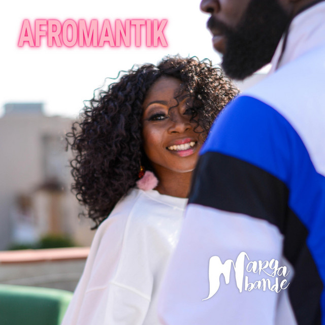
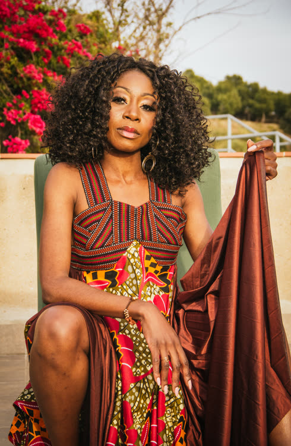
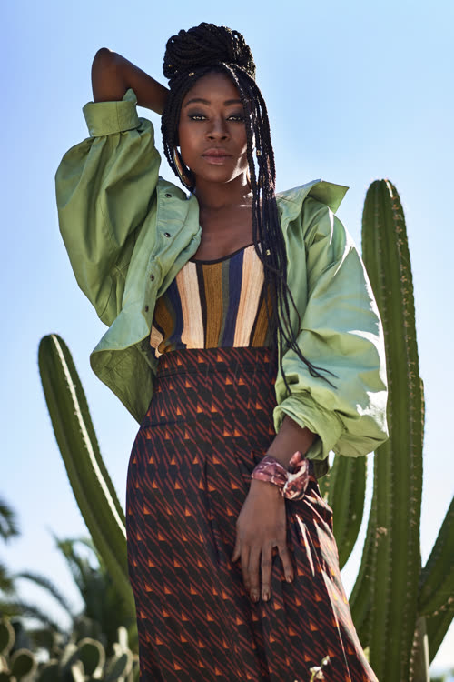
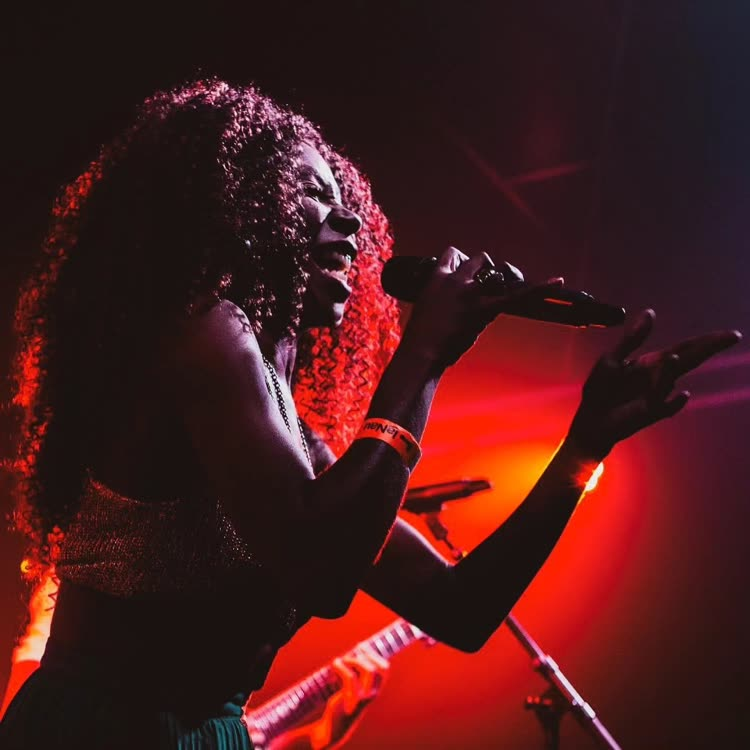
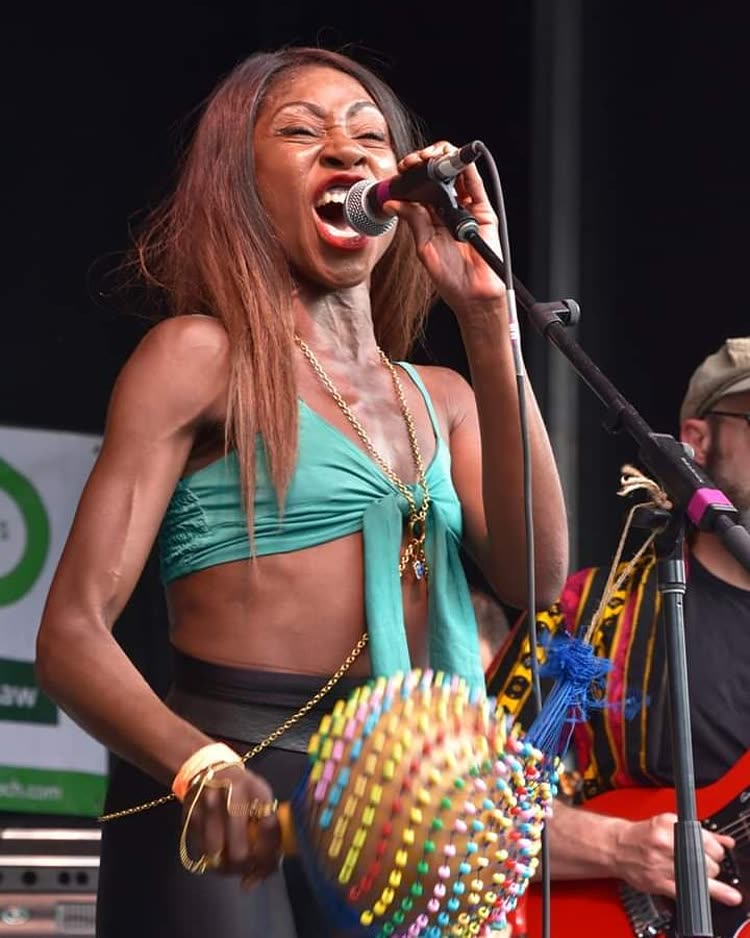

MargaMbande Presskit · Press Kit & Dossier Digital
Marga Mbande no se explica con cifras; se recorre como un mapa.
Nacida en Barcelona, de raíces ndowe (kombe) de Guinea Ecuatorial, se define como «africana nacida en España» y canta en inglés, castellano, catalán y kombe. Su ruta arranca en 2003 como cofundadora de Dlux Dlux · pioneras del R&B en español · 3 discos, pioneras en introducir los códigos del R&B en la escena española: tres discos, colaboraciones con Nach, El Chojin y Arianna Puello y telonerías a Method Man y Afrika Bambaataa. Desde entonces ha construido su carrera sobre la carretera, el directo y la resistencia cultural. Ha sido corista de Mónica Green y residente de las Noches Mágicas de la Casa Batlló, y ha compartido cartel con leyendas como Jimmy Cliff y Doreen Shaffer, de The Skatalites, en el Rototom Sunsplash, que la contó como artista y maestra de ceremonias durante tres ediciones consecutivas (2017–2019).
Dlux · pioneras del R&B en español · 3 discos, pioneras en introducir los códigos del R&B en la escena española: tres discos, colaboraciones con Nach, El Chojin y Arianna Puello y telonerías a Method Man y Afrika Bambaataa. Desde entonces ha construido su carrera sobre la carretera, el directo y la resistencia cultural. Ha sido corista de Mónica Green y residente de las Noches Mágicas de la Casa Batlló, y ha compartido cartel con leyendas como Jimmy Cliff y Doreen Shaffer, de The Skatalites, en el Rototom Sunsplash, que la contó como artista y maestra de ceremonias durante tres ediciones consecutivas (2017–2019).
Su voz La voz · en vivoEscucha a Marga Mbande en directoEscuchar ▶ no se queda en casa. Como voz principalLa voz · en vivoEscucha a Marga Mbande en directoEscuchar ▶ de Alma Afrobeat Ensemble recorrió el Medio Oeste de Estados UnidosPrensa · Chicago Reader“Barcelona’s Alma Afrobeat Ensemble keep the spirit of afrobeat going strong”Leer artículo ↗ en 2018 y 2019: 25 conciertos en dos giras. Ha llevado su directo de Canarias a Oslo, París, Suiza, Andorra y Armenia, y ha pisado escenarios tan distintos como el Akron Civic Theatre, The Cedar o Martyrs' en Estados Unidos, y en Barcelona la Sala Apolo, Razzmatazz, el Poble Espanyol, el Jamboree, Luz de Gas, Tarantos, el Castell de Montjuïc, CosmoCaixa, el CCCB o el Liceu.
La voz · en vivoEscucha a Marga Mbande en directoEscuchar ▶ no se queda en casa. Como voz principalLa voz · en vivoEscucha a Marga Mbande en directoEscuchar ▶ de Alma Afrobeat Ensemble recorrió el Medio Oeste de Estados UnidosPrensa · Chicago Reader“Barcelona’s Alma Afrobeat Ensemble keep the spirit of afrobeat going strong”Leer artículo ↗ en 2018 y 2019: 25 conciertos en dos giras. Ha llevado su directo de Canarias a Oslo, París, Suiza, Andorra y Armenia, y ha pisado escenarios tan distintos como el Akron Civic Theatre, The Cedar o Martyrs' en Estados Unidos, y en Barcelona la Sala Apolo, Razzmatazz, el Poble Espanyol, el Jamboree, Luz de Gas, Tarantos, el Castell de Montjuïc, CosmoCaixa, el CCCB o el Liceu.
En solitario ha firmado MBANDE SOUNDMBANDE SOUND · 2017 (2017) y AFROMANTIK La Voz · Antena 3Marga Mbande en el prime time · Equipo MalúVer vídeo ▶ (Antena 3, Equipo Malú), por La 2 de la mano de Macaco y por el cine, como una de las cuatro protagonistas del documental 37 Grados37 Grados · documental · Filmin (Filmin). Fuera del escenario impulsó las Cypha Sessions y fundó Afrolab Basement, jams con banda en directo de afrobeats, hip-hop y amapiano que hoy son punto de encuentro de la cultura afro y urbana de Barcelona.
En 2027 presenta IGOMÁ, una obra de conservación y rescate de la lengua bapuku. Concebido como el hallazgo de una carta perdida en 1968 entre Guinea Ecuatorial y España, el proyecto transforma la memoria olvidada en baile, fuerza y canto. Un espectáculo de impacto inmediato donde su voz pasa de la rotundidad más potente a la seda más íntima.
El show de Marga Mbande es un ritual magnético.
Adelanto Gira 2027
Afrika for me · Live
Makelenge · Live en Sofar Barcelona
Su voz viaja sin esfuerzo de la potencia rotunda a la suavidad de la seda, conectando con el público desde el primer compás. Sobre el escenario se presenta en formación de cuarteto orgánico.

Marga Mbande no se explica con cifras; se recorre como un mapa. Cantante y compositora nacida en Barcelona, con raíces ndowe, pionera del R&B en español con Dlux, voz de Alma Afrobeat Ensemble en Estados Unidos y del Rototom Sunsplash, protagonista de 37 Grados y de La Voz. En 2027 presenta IGOMÁ, un espectáculo para rescatar la lengua bapuku.
1 retrato y 4 imágenes de escenario en máxima resolución original. Click en “Descargar” para guardar cada archivo individualmente.




Nota de sostenibilidad: este dossier está maquetado en formato vertical y optimizado en blanco y negro estricto para minimizar el consumo de tinta y tóner en impresiones de producción o salas.
Descarga / Impresión
Nota de prensa · IGOMÁ (2027)
Marga Mbande presenta IGOMÁ, un disco que rescata la lengua bapuku y la memoria entre Guinea Ecuatorial y España
El single de adelanto, «Na Landi», se publica el 4 de febrero de 2027; el álbum completo, ocho canciones de herencia familiar, llega el 20 de marzo de 2027. El proyecto se presenta en directo en cuarteto, con visuales propios.
Barcelona — Marga Mbande no se explica con cifras; se recorre como un mapa. Nacida en Barcelona, de raíces ndowe (kombe) de Guinea Ecuatorial, la cantante y compositora presenta ahora su proyecto más personal: IGOMÁ, un disco que recupera el bapuku, una lengua en peligro, como hilo entre la memoria familiar y la historia compartida entre Guinea Ecuatorial y España.
El disco nace de una imagen concreta: una carta perdida en 1968 entre los dos países, que Mbande convierte en punto de partida de un trabajo de conservación cultural y lingüística. Cada canción recoge una historia distinta de esa herencia, y juntas dibujan un árbol genealógico cantado: hay un maestro al que se recuerda, una mirada al pasado colonial, un orgullo de familia que se mide en dotes, una carta de amor que atraviesa generaciones, un tío cuyo amor no llegó a puerto, y las historias que se contaban de boca en boca cuando Guinea Ecuatorial todavía era colonia. Ese equilibrio entre raíz y presente es también el del propio sonido del disco: una afrofusión con acento de afrosoul, donde la voz de Mbande —una voz que en cada escenario, del Rototom Sunsplash a un teatro de Barcelona, ha demostrado su capacidad de conectar con públicos muy distintos— hace de puente entre el bapuku que casi nadie canta ya y un oído acostumbrado al pop y a la escena internacional de world music.
El disco, canción a canción
En directo, IGOMÁ se presenta en formato de cuarteto —voz, batería, guitarra y bajo—, con Marga Mbande como voz principal, y se acompaña de un despliegue visual creado específicamente para la gira.
El proyecto llega después de más de veinte años de trayectoria: cofundadora en 2003 de Dlux, pioneras del R&B en español; voz principal de Alma Afrobeat Ensemble en sus giras por el Medio Oeste de Estados Unidos (2018 y 2019, 25 conciertos); artista y maestra de ceremonias en tres ediciones consecutivas del Rototom Sunsplash (2017–2019); residente de las Noches Mágicas de la Casa Batlló; protagonista del documental 37 Grados (Filmin) y, en 2024, integrante del Equipo Malú en La Voz (Antena 3). Con IGOMÁ, ese recorrido internacional se pone al servicio de una historia muy concreta: la suya.
Contacto de prensa y programación: +34 629 82 84 79 · info@gramophonerecords.es
Descarga / Impresión